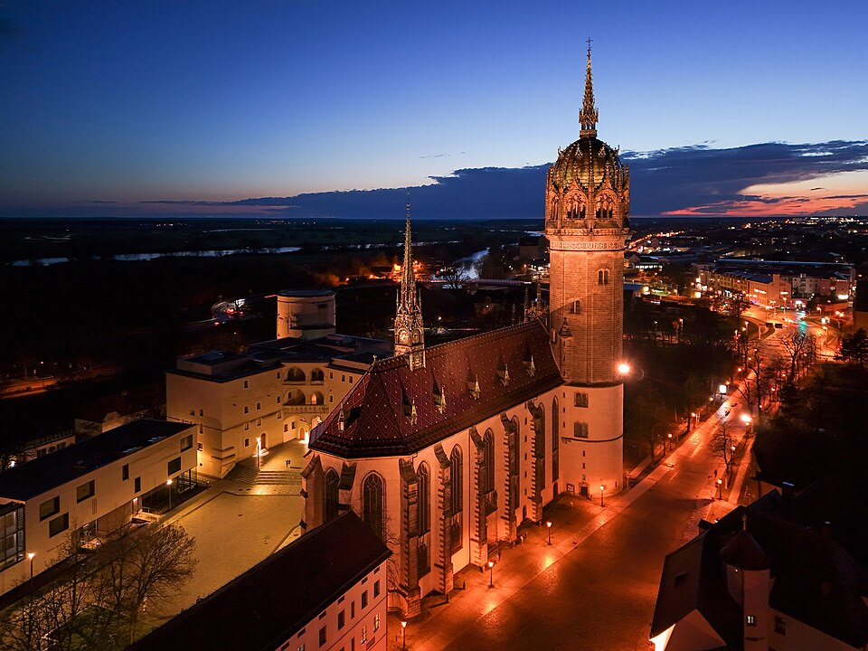
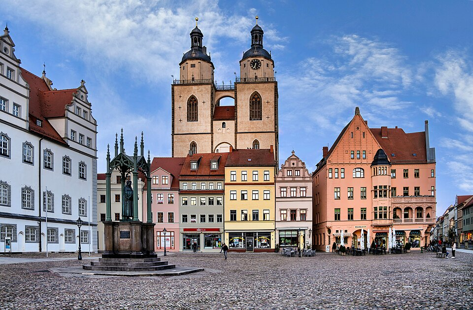
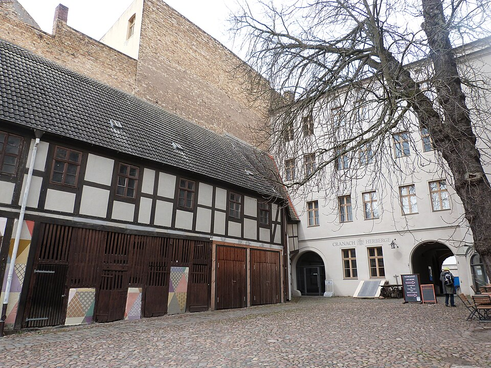
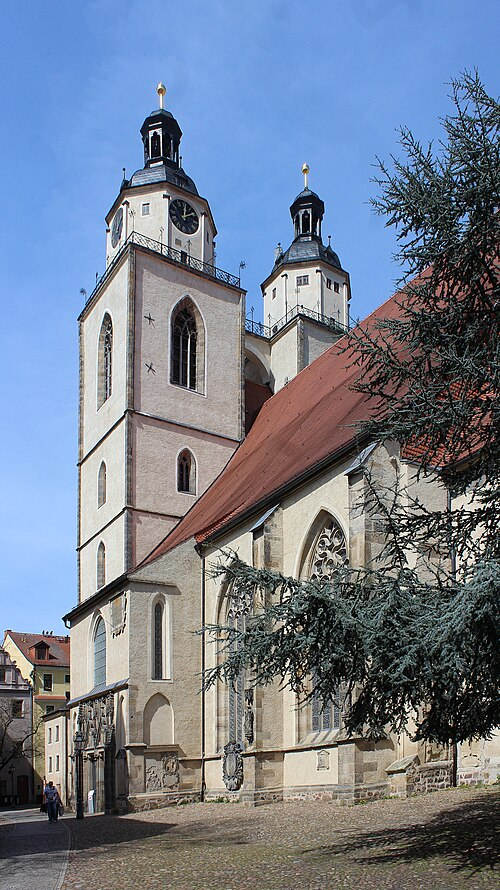
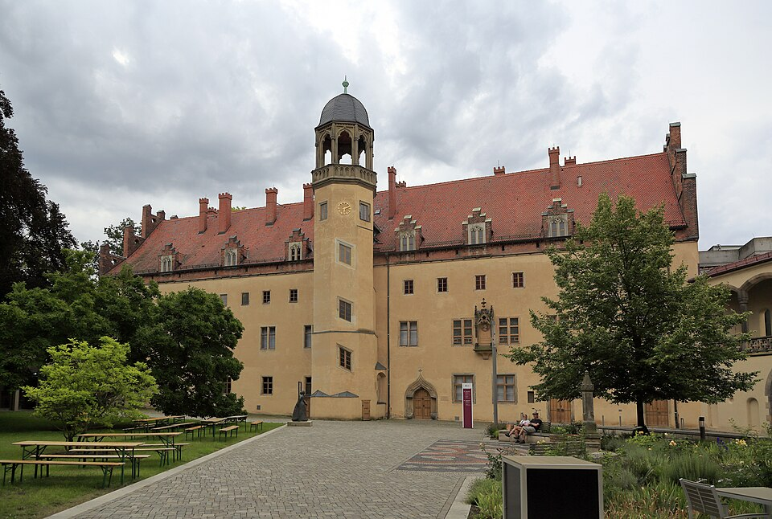

Where one frustrated professor posted 95 arguments to a church door — and accidentally launched the Protestant Reformation
Where to go
Wittenberg's entire historic core can be walked in about 20 minutes — but every block holds a story. Here are the must-sees, with the details worth stopping for.

⛪Ground zero of the Protestant Reformation. On October 31, 1517, Martin Luther posted his 95 Theses to the wooden door of this church. The original door was destroyed during the Seven Years' War in 1760, but the church was rebuilt in the Neo-Gothic style in the 19th century as a monument to Luther. His tomb is inside.

🏛This wide square looks much the same today as it did in Luther's time, used for everything from tournaments to executions. The Renaissance Town Hall dominates one side. In the center stand 19th-century statues of both Luther and Melanchthon. Visiting church groups from across the world regularly gather here to sing.

🎨The large Renaissance building on the corner of Market Square was the home and studio of Lucas Cranach the Elder — official court painter, printing entrepreneur, pharmacist, and Martin Luther's closest friend. Step into the surprisingly large courtyard and find the statue of Cranach sketching at the far end. A small Cranach museum is at #4 on the square (€7, daily 10:00–17:00).

⛪The oldest building in Wittenberg and Luther's home church — where he was married, his children were baptized, and where he preached over 2,000 times. The twin towers don't quite match: the original pointy Gothic spires were knocked down in a 1546 battle and later rebuilt in a rounder Renaissance style.

🏠Luther's former home is now an excellent museum displaying original paintings, manuscripts, and Reformation-era artifacts — including the actual pulpit Luther preached from, famous Cranach portraits, and Luther's original New Testament and Bible translations into High German. Even if the museum is closed, walk through the passage at #59 to see the enormous turreted building in the inner courtyard.
The Man Behind It All
Born the son of a copper-smelter owner in 1483, Luther became a monk after a near-death experience in a thunderstorm, a theology professor after a crisis of faith, and one of the most consequential figures in Western history after a pilgrimage to Rome left him appalled by church corruption.
He was excommunicated, declared an outlaw (meaning he could legally be killed on sight), hid under a false name and a beard, translated the New Testament in ten weeks, married an ex-nun, and died in the same town where he was born — having permanently changed Christianity, the German language, and the political map of Europe.
How it happened
From a fishing village chosen by a prince, to the center of the Christian world — and back. Wittenberg's history is inseparable from the people who lived and worked here.
The cast
The Reformation was not a solo performance. Here are the visionaries, rebels, artists, and partners who made it happen.
Born in Eisleben, Luther became a monk after a lightning bolt, arrived in Wittenberg as a theology professor, and concluded that God makes sinners righteous through faith — not through purchasing indulgences or earning it through good deeds. His 95 Theses launched the Reformation. Excommunicated and declared an outlaw, he translated the Bible while hiding under a false identity. He later married Katharina von Bora, wrote hymns, and died in Eisleben — his birth town.
Born Philipp Schwartzerdt, he changed his name to its Greek translation: Melanchthon, meaning "black soil." Despite being short, young, sickly, and — by contemporary accounts — notoriously unattractive, he impressed everyone in Wittenberg with his intellect. He taught ancient languages, theology, and pedagogy; provided invaluable help translating the Bible from the original Greek and Hebrew; and wrote the Augsburg Confession — a foundational document of Protestantism. He also encouraged women to pursue university study.
Official court painter to Frederick the Wise and one of the wealthiest men in Wittenberg. Luther's closest friend and the only artist with permission to paint Luther portraits — around 2,000 in total. As an entrepreneur he also ran a pharmacy and a printing operation, and was one of the first printers of Luther's writings. His altar painting in the Town Church of St. Mary is one of the Reformation's most important artworks.
The prince-elector who built Wittenberg into a city worth visiting. He founded the university, hired Cranach, built a castle, and chose this backwater town as his royal seat. Although Frederick remained a devout Catholic his entire life, his support for Luther, Melanchthon, and the early Reformers never wavered — likely saving the Reformation from being crushed. When Luther was declared an outlaw, Frederick arranged his safe passage to Wartburg Castle.
An ex-nun who escaped her convent and arrived in Wittenberg, eventually marrying Martin Luther in 1525 — a marriage that set the precedent for Protestant clergy to marry. Luther called her "my lord Katie" and handed her the family finances entirely. She cultivated a garden, brewed beer, raised cattle, rented rooms to students, and raised six children plus 11 adopted orphans. A statue of Katharina stands in the Luther House courtyard, erected on her 500th birthday in 1999.
The son who continued his father's legacy. He co-created the famous altar painting in the Town Church of St. Mary — and painted himself into it, handing a Communion chalice directly to Martin Luther, who appears wearing his "Junker Jörg" disguise. He kept the Cranach workshop running after his father's death, maintaining the family's central role in Reformation art for another generation.
Stranger than fiction
Details from Wittenberg's history found nowhere else on this page — tap each card to reveal the answer.